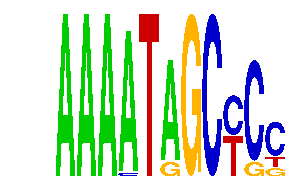

family_5 |
|---|
|  |
| Download PWM |
| Download instances (motifs) |
| Show motif distribution |
Query_ID | Query_Consensus | Subject_Name | Source_DB | Subject_ID | Length | Orientation | Offset | Divergence | Overlap | Subject_Consensus |
|---|---|---|---|---|---|---|---|---|---|---|
| family_5 | AAAATAGCYCC | NFATC2 | JASPAR | MA0152.1 | 7 | reverse-complement | -3 | 0.455 | 4 | TTTTCCA |
| family_5 | AAAATAGCYCC | TAAWWATAG | JASPAR | PF0054 | 9 | as given | -2 | 0.706 | 7 | TAAAAATAG |
| family_5 | AAAATAGCYCC | YTATTTTNR | JASPAR | PF0033 | 9 | reverse-complement | -2 | 0.878 | 7 | TTATTTTNA |
Sequence | Start_position (from start) | Start_position (from end) | Average conservation | Best conservation score | Instance_with_best_CS | Best_Z-score | Instance_with_best_ZS | Strand |
|---|---|---|---|---|---|---|---|---|
| chr10:53062926-53063926 | 395 | 406 | 0.00972727 | 0.09 | AAAATRGCYCC | 18.51029 | AAAATAGCYSC | 1 |
| chr3:95764567-95765567 | 908 | 919 | 0.223455 | 0.23 | AAAATAGCYCS | 20.804306 | AAAATAGCYCS | -1 |
| chr8:84380203-84381203 | 9 | 20 | 0.840545 | 1 | AAAMTAGCYCC | 18.858875 | AAAATAGCYCY | 1 |
| chr8:48435845-48436845 | 647 | 658 | 0.730364 | 0.971 | AAAATRGCYCC | 17.349897 | AAAATRGCYCC | 1 |
| chr19:25460212-25461212 | 925 | 936 | 0.00772727 | 0.034 | AAAATAGCYSC | 18.51029 | AAAATAGCYSC | 1 |
| chr3:52867122-52868122 | 245 | 256 | 0.198091 | 0.911 | AAAATRGCYCC | 17.349897 | AAAATRGCYCC | 1 |
| chr19:56801374-56802374 | 821 | 832 | 0.998818 | 1 | AAAATAGCYSC | 17.349897 | AAAATRGCYCC | 1 |
| chr10:120313668-120314668 | 746 | 757 | 0.00254545 | 0.008 | AAAATRGCYCC | 17.349897 | AAAATRGCYCC | 1 |
| chr3:52001706-52002706 | 910 | 921 | 0.969091 | 1 | AAAATAGCYSC | 18.51029 | AAAATAGCYSC | -1 |
| chr11:58952154-58953154 | 117 | 128 | 1 | 1 | AAAATRGCYCC | 18.51029 | AAAATAGCYSC | 1 |
| chr19:53753431-53754431 | 631 | 642 | 0.999727 | 1 | AAAATAGCYCS | 20.804306 | AAAATAGCYCS | -1 |
| chr5:150882771-150883771 | 964 | 975 | 0.429545 | 0.884 | AAAATAGCYCY | 18.858875 | AAAATAGCYCY | 1 |
| chr8:116979474-116980474 | 648 | 659 | 0.998545 | 1 | AAAATAGCYCY | 18.858875 | AAAATAGCYCY | 1 |
| chr12:109168436-109169436 | 824 | 835 | 0.742182 | 1 | AAAATAGCYCS | 20.804306 | AAAATAGCYCS | -1 |
| chr12:55505911-55506911 | 345 | 356 | 0.998727 | 1 | AAAATAGCYCS | 20.804306 | AAAATAGCYCS | -1 |
| chr2:93150224-93151224 | 497 | 508 | 0.00645455 | 0.013 | AAAATRGCYCC | 17.349897 | AAAATRGCYCC | -1 |
| chr10:116583203-116584203 | 988 | 999 | 0.00790909 | 0.017 | AAAATAGCYCY | 20.804306 | AAAMTAGCYCC | 1 |
| chr11:98244950-98245950 | 117 | 128 | 0.996 | 1 | AAAATAGCYCY | 17.349897 | AAAATRGCYCC | 1 |
| chr13:9126841-9127841 | 323 | 334 | 0.689455 | 1 | AAAATRGCYCC | 18.51029 | AAAATAGCYSC | -1 |
| chr3:87953922-87954922 | 225 | 236 | 1 | 1 | AAAATRGCYCC | 18.858875 | AAAATAGCYCY | 1 |
| chr17:10505418-10506418 | 317 | 328 | 0.0406364 | 0.11 | AAAMTAGCYCC | 20.804306 | AAAMTAGCYCC | 1 |
| chr11:58816292-58817292 | 90 | 101 | 0.0359091 | 0.094 | AAAATAGCYSC | 18.51029 | AAAATAGCYSC | 1 |
| chr7:56102831-56103831 | 694 | 705 | 0.987909 | 1 | AAAATAGCYCS | 20.804306 | AAAATAGCYCS | 1 |
| chr19:22628756-22629756 | 612 | 623 | 0.830818 | 1 | AAAATAGCYCY | 18.858875 | AAAATAGCYCY | 1 |
| chr9:77484113-77485113 | 538 | 549 | 0.00127273 | 0.005 | AAAATAGCYCY | 18.858875 | AAAATAGCYCY | -1 |
| chrX:56838078-56839078 | 810 | 821 | 1 | 1 | AAAATAGCYSC | 18.51029 | AAAATAGCYSC | -1 |
| chr9:31805071-31806071 | 273 | 284 | 0.841364 | 1 | AAAATRGCYCC | 18.858875 | AAAATAGCYCY | 1 |
| chr9:67039403-67040403 | 493 | 504 | 0.008 | 0.016 | AAAATAGCYCY | 18.858875 | AAAATAGCYCY | -1 |
| chr16:7069455-7070455 | 361 | 372 | 0.995364 | 1 | AAAATAGCYCY | 20.804306 | AAAMTAGCYCC | 1 |